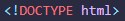
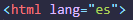

SEMANA 1- CLASE 1
Hola! Soy yo de nuevo y voy a contarte cómo me fue en mi clase #01... Esta clase fue bastante introductoria, así que tocó conocernos todos, en primer lugar se presentó la docente Gladys Esmeralda Asurza Espiritu, después cada alumno empezó a presentarse para entrar en un ambiente de confianza y compañerismo. Además se proyectó trabajos muy interesantes que me abrió la mente para poder crear algo interesante, asimismo, es increíble las herramientas que hay en la actualidad para realizar proyectos innovadores y que sobre todo resuelvan problemáticas. Seguido a ello la profesora pasó a proyectar dos vídeos. El primero hablaba de la Web 1.0, 2.0, 3.0 y 4.0, y dejaré unos breves apuntes que siempre ayudan a recordar todo más rápido.
PRIMER VÍDEO
- La web 1.0: Es estática, asimismo, el HTML va por vía email, por otro lado conserva elementos que no se pueden actualizar.
- La web 2.0: Esta mantiene continua la actualización, además es más participativa, tiene más herramientas y se centra en los usuarios. Como ejemplo están "Los blogs".
- La web 3.0: Es inteligente, esta clasifica páginas según la información, es abierta y mantiene rápidez, con información libre. Presenta practicidad en sus funciones y en su distribución. Por ejemplo: Facebook, Amazon, ebay.
- La web 4.0: Facilita la investigación, asimismo, tiene un asertado sistema operativo global y por ende tiene más avances tecnológicos.
SEGUNDO VÍDEO
Este vídeo habló sobre el diseño web y la impresión 3D, respecto de la evolución que han tenido estos en la actualidad, asimismo como se viene utilizando, es muy útil ya que se puede lograr muchas cosas innovadoras para el futuro.


SEMANA 1- CLASE 2
Hola, soy yo de nuevo! Te contaré cómo se desarrollo mi segunda clase, fue una clase bastante teórica, sin embargo, fue super enriquecedora porque aprendimos conceptos necesarios para poder desarrollar nuestra primera página web, como el de bitácora, diseño web y sobre las metodologías tradicionales y ágiles.
- La Bitácora: Sirve como un espacio físico o digital, para poder llevar un registro de apuntes de temas en específico.
- La tradicional o cascada: Son predictivos, va a corde con proyectos ordenados y predecibles, está orientada a procesos y la documentación es extensa.
- Los métodos ágiles: Son adaptativos, el proceso es flexible y además, varios equipos de funciones cruzadas trabajan en interraciones paralelas para producir soluciones potencialmente entregables
Asimismo, la profesora introductoriamente vimos conceptos básicos de HTML para poder aprender a usar Visual Studio Code. Es muy importante memorizar los valores, atributos y etiquetas para cuando estemos en el desarrollo de la página web todo sea más ágil. Por mi parte, me entusiasma mucho aprender a realizar una página web, así que estuve muy atenta para que todo me pueda salir bien. Algo muy importante que debes saber, es que al inicio de crear la página web tienes que incluir  para que todo en la página web fluya de forma correcta. Asimismo, es importante colocar el idioma en que se desarrollará la página web , es recomendable en doble comilla.
ETIQUETAS PARA ESTRUCTURA
 : Esta etiqueta sirve para contener todo aquello que quieras colocar en tu página web.
: Esta etiqueta sirve para contener todo aquello que quieras colocar en tu página web.
 : Esta etiqueta sirve para contener lo que vas a mostrar a los visitantes de tu página web, ya sea texto, imágenes, vídeos, etc.
: Esta etiqueta sirve para contener lo que vas a mostrar a los visitantes de tu página web, ya sea texto, imágenes, vídeos, etc.
ETIQUETAS MÁS USADAS